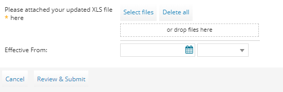

How to change your service configuration for Managed Monitoring as a Service
Overview
With Managed Monitoring as a Service, our Cloud Operations team monitors your devices, receiving and reacting to any abnormal events, only escalating those events that genuinely require your attention.
When we first provision the service, unless you specify otherwise in your initial request, we set the service up with default thresholds for the devices you've selected to monitor. At any time, you can raise a Service Request, via the My Calls section of the UKCloud Portal, to change these thresholds and other service configuration details.
This article shows you how to change your Managed Monitoring as a Service configuration.
Changing your service configuration
To make any changes to Managed Monitoring as a Service, log a Service Request via the My Calls section of the UKCloud Portal. For general information about raising a Service Request, see How to use My Calls in the UKCloud Portal.
To make changes, you'll need to fill in the appropriate details in the Managed IT Operations - Add or Remove Device spreadsheet (UKC-FRM-303) spreadsheet, which enables us to automate your requested changes. This is the same spreadsheet as the one you used to originally set up your service. The Service Request template includes a link to download the spreadsheet. When filling out the spreadsheet, ensure that you follow the instructions provided.
If you want to download the spreadsheet ahead of raising the request, click here.
Note
If you're not sure how to complete the spreadsheet or need help with any of the details, contact UKCloud Support.
Defining the monitoring method
You can request to change the monitoring method used for any of your monitored devices.
The UKCloud monitoring system is capable of using either snmpv2c or snmpv3 to perform the basic, standard template checks against an device. Alternatively, if the only checks required are performed remotely (such as ping, port checks, HTTP content checks and so on), you can use remote-only.
Note
Do not select the monitoring-agent method unless previously discussed and agreed with UKCloud.
In My Calls, raise a ticket using the Managed IT Operations - Make changes to my managed devices template.
Download the spreadsheet linked in the template.

On the Credentials tab of the spreadsheet, add the set of credentials to be used for the Base/Primary Host template SNMP monitoring protocol.
On the Device Information tab, enter the details of the device(s) for which you want to change the monitoring method, making sure to select Yes in the ManagedMonitoring column.
Tip
You can find the details of your devices on previous spreadsheets if you have them. If you don't, and can't remember your device details, contact UKCloud Support, who will be able to provide you with the necessary information.
On the Monitoring - Device Settings tab, in the row for the appropriate device, from the list in the MonitoringMethod column, select the monitoring method you want to use for the device:
snmpv2c,snmpv3orremote-only.Tip
Device names from the Device Information tab are auto-populated into the Monitoring - Device Settings tab. If the information doesn't auto-populate, in the Data ribbon, select Refresh All.

Device names will then auto-populate in the PrimaryDeviceName column.
In the BaseMonitoringCredentials column, select the name of the credentials you created on the Credentials tab.
When you've finished completing the spreadsheet, in your My Calls ticket either click Select files and browse to the completed spreadsheet or drag the spreadsheet into the template.

Enter the date from which you want the changes to be effective.
When you're done, click Review & Submit then Submit.
As per our standard customer service targets, we aim to resolve your request within two working days.
Overriding default monitoring settings
If the default monitoring thresholds do not meet your requirements, you can request to override them.
In My Calls, raise a ticket using the Managed IT Operations - Make changes to my managed devices template.
Download the spreadsheet linked in the template.
On the Device Information tab of the spreadsheet, enter the details of the device for which you want to override the default settings, making sure to select Yes in the ManagedMonitoring column.
Tip
You can find the details of your devices on previous spreadsheets if you have them. If you don't, and can't remember your device details, contact UKCloud Support, who will be able to provide you with the necessary information.
On the Monitoring - Overrides tab, in the PrimaryDeviceName column, select the device you want to change.
Tip
Device names from the Device Information tab are auto-populated into the Monitoring - Overrides tab. If the information doesn't auto-populate, in the Data ribbon, select Refresh All.
Device names will then appear in the PrimaryDeviceName dropdown list.
In the AlertType column, select the monitoring element that you want to override:
CPU - Checks the processor load of the monitored device
RAM - Checks the available memory of the monitored device
UNIX_DISK - Checks the disk spaced used by the monitored device
WINDOWS_DISK - Checks the disk spaced used by the monitored device
PING - Checks the response from the monitored device
If you selected UNIX_DISK or WINDOWS_DISK in the AlertTarget column, enter the resource the override will apply to, for example:
Disk: For the UNIX_DISK monitoring element, the alert target refers to the mount point to monitor for Linux space/disk consumption, for example,
/homeor/usrWindows drive: For the WINDOWS_DISK monitoring element, the alert target refers to the drive letter to monitor for Windows space/disk consumption, for example
CorD
From the list in the RemoveServiceCheck column, select TRUE if you want to disable the check for this monitoring element.
Tip
If you select TRUE in this column, or if the AlertType is PING, you do not need to complete the information in the remaining columns.
In the MajorThreshold column, enter the threshold (as a percentage) above which a major level alert will be raised for the monitoring element, for example
80.In the CriticalThreshold column, enter the threshold (as a percentage) above which a critical level alert will be raised for the monitoring element, for example
95.When you've finished completing the spreadsheet, in your My Calls ticket either click Select files and browse to the completed spreadsheet or drag the spreadsheet into the template.
Enter the date from which you want the changes to be effective.
When you're done, click Review & Submit then Submit.
As per our standard customer service targets, we aim to resolve your request within two working days.
Adding additional monitoring elements
Managed Monitoring as a Service provides a default set of monitoring elements (CPU, RAM, UNIX_DISK, WINDOWS_DISK or PING). You can request additional monitoring elements if required.
Currently supported monitoring elements are:
URL - Checks the response from the specified URL; any return of a 200 status code is expected and considered correct
URL_CONTENT - Checks for a specific response from a URL and a looks for a specified string in the returned content
CERT_EXPIRY - Checks whether the specified certificate has expired
HOST_PORT - Checks for a valid connection to the specified port
WINDOWS_SERVICE - Checks the status of the specified service
AGENT_PORT - Checks for a valid connection to the specified agent port
UNIX_PROCESS - Checks whether the specified process is running
To add a monitoring element:
In My Calls, raise a ticket using the Managed IT Operations - Make changes to my managed devices template.
Download the spreadsheet linked in the template.
Tip
If you want to download the spreadsheet in advance, you can download it from here
On the Device Information tab of the spreadsheet, enter the details of the device for which you want to specify additional monitoring elements, making sure to select Yes in the ManagedMonitoring column.
Tip
You can find the details of your devices on previous spreadsheets if you have them. If you don't, and can't remember your device details, contact UKCloud Support, who will be able to provide you with the necessary information.
On the Monitoring - Advanced tab, in the PrimaryDeviceName column, select the device to which you want to add the monitoring element.
Tip
Device names from the Device Information tab are auto-populated into the Monitoring - Advanced tab. If the information doesn't auto-populate, in the Data ribbon, select Refresh All.
Device names will then appear in the PrimaryDeviceName dropdown list.
In the AdvancedAlertType column, select the type of monitoring element you want to add to the device.
Complete the rest of the spreadsheet as follows:
Monitoring element Column Value URL AlertTarget The URL to check; this may be HTTPS or HTTP URL_CONTENT AlertTarget The URL to check; this may be HTTPS or HTTP AlertArgument1 The response code to check for AlertArgument2 The string to check for in the returned content CERT_EXPIRY AlertTarget The HTTPS to check for an expired certificate HOST_PORT AlertTarget The port number of the endpoint to check WINDOWS_SERVICE AlertTarget The service name to check the status of AGENT_PORT AlertTarget The port number of the endpoint that the agent installed on the device should be checking UNIX_PROCESS AlertTarget The process name to check the status of When you've finished completing the spreadsheet, in your My Calls ticket either click Select files and browse to the completed spreadsheet or drag the spreadsheet into the template.
Enter the date from which you want the changes to be effective.
When you're done, click Review & Submit then Submit.
As per our standard customer service targets, we aim to resolve your request within two working days.
Related articles
How to add devices to and remove devices from Managed IT Operations
How to provide notification of maintenance windows for Managed IT Operations
Feedback
If you find a problem with this article, click Improve this Doc to make the change yourself or raise an issue in GitHub. If you have an idea for how we could improve any of our services, send an email to feedback@ukcloud.com.